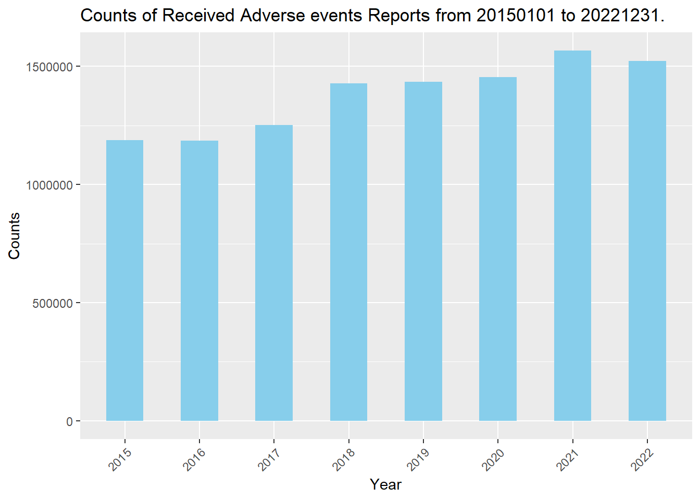

#shiny::runGitHub("jiayanglu/Project2")Project2
Install packages needed in the following code chunks.
#options(repos = "https://cloud.r-project.org")
#install.packages(c("shiny", "tidyverse", "jsonlite"))
library(shiny)Warning: package 'shiny' was built under R version 4.3.3library(tidyverse)Warning: package 'tidyverse' was built under R version 4.3.3Warning: package 'ggplot2' was built under R version 4.3.3Warning: package 'readr' was built under R version 4.3.3── Attaching core tidyverse packages ──────────────────────── tidyverse 2.0.0 ──
✔ dplyr 1.1.4 ✔ readr 2.1.5
✔ forcats 1.0.0 ✔ stringr 1.5.1
✔ ggplot2 3.5.1 ✔ tibble 3.2.1
✔ lubridate 1.9.3 ✔ tidyr 1.3.1
✔ purrr 1.0.2
── Conflicts ────────────────────────────────────────── tidyverse_conflicts() ──
✖ dplyr::filter() masks stats::filter()
✖ dplyr::lag() masks stats::lag()
ℹ Use the conflicted package (<http://conflicted.r-lib.org/>) to force all conflicts to become errorslibrary(jsonlite)
Attaching package: 'jsonlite'
The following object is masked from 'package:purrr':
flatten
The following object is masked from 'package:shiny':
validateopenFDA API endpoint for animal drug adverse event
Queries from openFDA API endpoint for animal drug adverse event reports are listed below.
Reports over time
This is a query about how many reports regarding to any undesirable experience associated with the use of an animal drug, including adverse reactions, product use errors, and product/manufacturing problems, within a date range in the openFDA API endpoint for the animal drug adverse event reports.
animal_API_reports_over_time <- function(start_date, end_date){
base_URL <- "https://api.fda.gov/"
endpoint <- "animalandveterinary/event.json"
query_reports_over_time <- "?count=original_receive_date"
full_URL <- paste0(base_URL, endpoint, query_reports_over_time)
output_API <- fromJSON(full_URL)
reports_over_time_data <- as_tibble(output_API$results)
earliest_date <- min(ymd(reports_over_time_data$time))
latest_date <- max(ymd(reports_over_time_data$time))
if (ymd(start_date) < earliest_date | ymd(end_date) > latest_date){
message <- paste0("ERROR: Please pass a date between ", earliest_date, " and ", latest_date, " in the format of YYYYMMDD", ".")
stop(message)
} else {
query_receivedate <- "?search=original_receive_date:"
query_date_range <- paste0("[", start_date, "+TO+", end_date, "]&count=original_receive_date")
full_URL <- paste0(base_URL, endpoint, query_receivedate, query_date_range)
output_API <- fromJSON(full_URL)
reports_over_time_data <- as_tibble(output_API$results)
reports_over_time_data <- reports_over_time_data |>
mutate(receivedate_ymd = ymd(reports_over_time_data$time)) |>
select(receivedate_ymd, count) |>
filter(receivedate_ymd >= ymd(start_date) & receivedate_ymd <= ymd(end_date))
query_name <- paste0("query_", start_date, "_to_", end_date)
return(setNames(list(earliest_date, latest_date, reports_over_time_data),
c("earliest_date", "latest_date", query_name)))
}
}
#animal_API_reports_over_time(20150101,20221231)Who reports
This is a query about primary reporter who holds or provides the most pertinent information related to the adverse event report within a date range in the openFDA API endpoint for the animal drug adverse event reports.
animal_API_who_reports <- function(start_date, end_date){
base_URL <- "https://api.fda.gov/"
endpoint <- "animalandveterinary/event.json"
query_who_reports <- "?count=original_receive_date"
full_URL <- paste0(base_URL, endpoint, query_who_reports)
output_API <- fromJSON(full_URL)
who_reports_data <- as_tibble(output_API$results)
earliest_date <- min(ymd(who_reports_data$time))
latest_date <- max(ymd(who_reports_data$time))
if (ymd(start_date) < earliest_date | ymd(end_date) > latest_date){
message <- paste0("ERROR: Please pass a date between ", earliest_date, " and ", latest_date, " in the format of YYYYMMDD", ".")
stop(message)
} else {
query_receivedate <- "?search=original_receive_date:"
query_date_range <- paste0("[", start_date, "+TO+", end_date, "]&count=primary_reporter.exact")
full_URL <- paste0(base_URL, endpoint, query_receivedate, query_date_range)
output_API <- fromJSON(full_URL)
who_reports_data <- as_tibble(output_API$results)
query_name <- paste0("query_", start_date, "_to_", end_date)
return(setNames(list(earliest_date, latest_date, who_reports_data),
c("earliest_date", "latest_date", query_name)))
}
}
#animal_API_who_reports(20150101, 20221231) Types of report
This is a query about the types of adverse events in the report within a date range in the openFDA API endpoint for the animal drug adverse event reports.
animal_API_types_of_reports <- function(start_date, end_date){
base_URL <- "https://api.fda.gov/"
endpoint <- "animalandveterinary/event.json"
query_types_of_reports <- "?count=original_receive_date"
full_URL <- paste0(base_URL, endpoint, query_types_of_reports)
output_API <- fromJSON(full_URL)
types_of_reports_data <- as_tibble(output_API$results)
earliest_date <- min(ymd(types_of_reports_data$time))
latest_date <- max(ymd(types_of_reports_data$time))
if (ymd(start_date) < earliest_date | ymd(end_date) > latest_date){
message <- paste0("ERROR: Please pass a date between ", earliest_date, " and ", latest_date, " in the format of YYYYMMDD", ".")
stop(message)
} else {
query_receivedate <- "?search=original_receive_date:"
query_date_range <- paste0("[", start_date, "+TO+", end_date, "]&count=type_of_information.exact")
full_URL <- paste0(base_URL, endpoint, query_receivedate, query_date_range)
output_API <- fromJSON(full_URL)
types_of_reports_data <- as_tibble(output_API$results)
query_name <- paste0("query_", start_date, "_to_", end_date)
return(setNames(list(earliest_date, latest_date, types_of_reports_data),
c("earliest_date", "latest_date", query_name)))
}
}
#animal_API_types_of_reports(20150101, 20221231) Animal breeds
This is a query about animal breeds in the adverse events report within a date range in the openFDA API endpoint for the animal drug adverse event reports.
animal_API_animal_breeds <- function(start_date, end_date){
base_URL <- "https://api.fda.gov/"
endpoint <- "animalandveterinary/event.json"
query_animal_breeds <- "?count=original_receive_date"
full_URL <- paste0(base_URL, endpoint, query_animal_breeds)
output_API <- fromJSON(full_URL)
animal_breeds_data <- as_tibble(output_API$results)
earliest_date <- min(ymd(animal_breeds_data$time))
latest_date <- max(ymd(animal_breeds_data$time))
if (ymd(start_date) < earliest_date | ymd(end_date) > latest_date){
message <- paste0("ERROR: Please pass a date between ", earliest_date, " and ", latest_date, " in the format of YYYYMMDD", ".")
stop(message)
} else {
query_receivedate <- "?search=original_receive_date:"
query_date_range <- paste0("[", start_date, "+TO+", end_date, "]&count=animal.breed.breed_component.exact")
full_URL <- paste0(base_URL, endpoint, query_receivedate, query_date_range)
output_API <- fromJSON(full_URL)
animal_breeds_data <- as_tibble(output_API$results)
query_name <- paste0("query_", start_date, "_to_", end_date)
return(setNames(list(earliest_date, latest_date, animal_breeds_data),
c("earliest_date", "latest_date", query_name)))
}
}
#animal_API_animal_breeds(20150101, 20221231) Reactions
This is a query about reactions in the adverse events report within a date range in the openFDA API endpoint for the animal drug adverse event reports.
animal_API_reactions <- function(start_date, end_date){
base_URL <- "https://api.fda.gov/"
endpoint <- "animalandveterinary/event.json"
query_reactions <- "?count=original_receive_date"
full_URL <- paste0(base_URL, endpoint, query_reactions)
output_API <- fromJSON(full_URL)
reactions_data <- as_tibble(output_API$results)
earliest_date <- min(ymd(reactions_data$time))
latest_date <- max(ymd(reactions_data$time))
if (ymd(start_date) < earliest_date | ymd(end_date) > latest_date){
message <- paste0("ERROR: Please pass a date between ", earliest_date, " and ", latest_date, " in the format of YYYYMMDD", ".")
stop(message)
} else {
query_receivedate <- "?search=original_receive_date:"
query_date_range <- paste0("[", start_date, "+TO+", end_date, "]&count=reaction.veddra_term_name.exact")
full_URL <- paste0(base_URL, endpoint, query_receivedate, query_date_range)
output_API <- fromJSON(full_URL)
reactions_data <- as_tibble(output_API$results)
query_name <- paste0("query_", start_date, "_to_", end_date)
return(setNames(list(earliest_date, latest_date, reactions_data),
c("earliest_date", "latest_date", query_name)))
}
}
#animal_API_reactions(20150101, 20221231) Outcomes
This is a query about animal’s medical status after treatment within a date range in the openFDA API endpoint for the animal drug adverse event reports.
animal_API_outcomes <- function(start_date, end_date){
base_URL <- "https://api.fda.gov/"
endpoint <- "animalandveterinary/event.json"
query_outcomes <- "?count=original_receive_date"
full_URL <- paste0(base_URL, endpoint, query_outcomes)
output_API <- fromJSON(full_URL)
outcomes_data <- as_tibble(output_API$results)
earliest_date <- min(ymd(outcomes_data$time))
latest_date <- max(ymd(outcomes_data$time))
if (ymd(start_date) < earliest_date | ymd(end_date) > latest_date){
message <- paste0("ERROR: Please pass a date between ", earliest_date, " and ", latest_date, " in the format of YYYYMMDD", ".")
stop(message)
} else {
query_receivedate <- "?search=original_receive_date:"
query_date_range <- paste0("[", start_date, "+TO+", end_date, "]&count=outcome.medical_status.exact")
full_URL <- paste0(base_URL, endpoint, query_receivedate, query_date_range)
output_API <- fromJSON(full_URL)
outcomes_data <- as_tibble(output_API$results)
query_name <- paste0("query_", start_date, "_to_", end_date)
return(setNames(list(earliest_date, latest_date, outcomes_data),
c("earliest_date", "latest_date", query_name)))
}
}
#animal_API_outcomes(20150101, 20221231) openFDA API endpoint for adverse drug events
Queries from openFDA API endpoint for adverse drug events are listed below.
Reports over time
This is a query about how many reports regarding to any undesirable experience associated with the use of an animal drug, including serious drug side effects, product use errors, product quality problems, and therapeutic failures, within a date range in the openFDA API endpoint for the adverse drug events.
drug_API_reports_over_time <- function(start_date, end_date){
base_URL <- "https://api.fda.gov/"
endpoint <- "drug/event.json"
query_reports_over_time <- "?count=receivedate"
full_URL <- paste0(base_URL, endpoint, query_reports_over_time)
output_API <- fromJSON(full_URL)
reports_over_time_data <- as_tibble(output_API$results)
earliest_date <- min(ymd(reports_over_time_data$time))
latest_date <- max(ymd(reports_over_time_data$time))
if (ymd(start_date) < earliest_date | ymd(end_date) > latest_date){
message <- paste0("ERROR: Please pass a date between ", earliest_date, " and ", latest_date, " in the format of YYYYMMDD", ".")
stop(message)
} else {
query_receivedate <- "?search=receivedate:"
query_date_range <- paste0("[", start_date, "+TO+", end_date, "]&count=receivedate")
full_URL <- paste0(base_URL, endpoint, query_receivedate, query_date_range)
output_API <- fromJSON(full_URL)
reports_over_time_data <- as_tibble(output_API$results)
reports_over_time_data <- reports_over_time_data |>
mutate(receivedate_ymd = ymd(reports_over_time_data$time)) |>
select(receivedate_ymd, count) |>
filter(receivedate_ymd >= ymd(start_date) & receivedate_ymd <= ymd(end_date))
query_name <- paste0("query_", start_date, "_to_", end_date)
return(setNames(list(earliest_date, latest_date, reports_over_time_data),
c("earliest_date", "latest_date", query_name)))
}
}
#drug_API_reports_over_time(20150101,20221231)Who reports
This is a query about category of individual who submittd the report within a date range in the openFDA API endpoint for the animal drug adverse event reports.
drug_API_who_reports <- function(start_date, end_date){
base_URL <- "https://api.fda.gov/"
endpoint <- "drug/event.json"
query_who_reports <- "?count=receivedate"
full_URL <- paste0(base_URL, endpoint, query_who_reports)
output_API <- fromJSON(full_URL)
who_reports_data <- as_tibble(output_API$results)
earliest_date <- min(ymd(who_reports_data$time))
latest_date <- max(ymd(who_reports_data$time))
if (ymd(start_date) < earliest_date | ymd(end_date) > latest_date){
message <- paste0("ERROR: Please pass a date between ", earliest_date, " and ", latest_date, " in the format of YYYYMMDD", ".")
stop(message)
} else {
query_receivedate <- "?search=receivedate:"
query_date_range <- paste0("[", start_date, "+TO+", end_date, "]&count=primarysource.qualification")
full_URL <- paste0(base_URL, endpoint, query_receivedate, query_date_range)
output_API <- fromJSON(full_URL)
who_reports_data <- as_tibble(output_API$results)
query_name <- paste0("query_", start_date, "_to_", end_date)
return(setNames(list(earliest_date, latest_date, who_reports_data),
c("earliest_date", "latest_date", query_name)))
}
}
# 1: Physician; 2: Pharmacist; 3: Other health professional; 4: Lawyer; 5: Consumer or non-health professional
#drug_API_who_reports(20150101, 20221231)General query code
This is a universal query code chunk to query from either “animalandveterinary” or “drug” endpoint of openFDA API. There are total 6 different queries to get 6 different types of data from “animalandveterinary” endpoint, which are “Reports over time”(query=1), “Who reports”(query=2), “Types of report”(query=3), “Animal breeds”(query=4), “Reactions”(query=5), and “Outcomes”(query=6). There are total 2 different queries to get 2 different types of data from “drug” endpoint, which are “Reports over time”(query=1), “Who reports”(query=2).
endpoint_API_query <- function(endpoint, query, start_date, end_date){
if (!endpoint %in% c("animalandveterinary", "drug")){
message <- paste0("ERROR: Please choose endpoint 'animalandveterinary' or 'drug'.")
stop(message)
}
base_URL <- "https://api.fda.gov/"
event <- "/event.json"
count <- "?count="
receive_date <- if (endpoint == "drug") "receivedate" else "original_receive_date"
full_URL <- paste0(base_URL, endpoint, event, count, receive_date)
output_API <- fromJSON(full_URL)
receivedate_data <- as_tibble(output_API$results)
earliest_date <- min(ymd(receivedate_data$time))
latest_date <- max(ymd(receivedate_data$time))
if (ymd(start_date) < earliest_date | ymd(end_date) > latest_date){
message <- paste0("ERROR: Please pass a date between ", earliest_date, " and ", latest_date, " in the format of YYYYMMDD", ".")
stop(message)
} else {
if (endpoint == "animalandveterinary"){
if (!query %in% c(1,2,3,4,5,6)){
message <- paste0("ERROR: Please choose query from 1 to 6.")
stop(message)
} else if (query == 1){
query_date_range <- paste0(":[", start_date, "+TO+", end_date, "]&count=", receive_date)
} else if (query == 2){
query_code <- "primary_reporter.exact"
query_date_range <- paste0(":[", start_date, "+TO+", end_date, "]&count=", query_code)
} else if (query == 3){
query_code <- "type_of_information.exact"
query_date_range <- paste0(":[", start_date, "+TO+", end_date, "]&count=", query_code)
} else if (query == 4){
query_code <- "animal.breed.breed_component.exact"
query_date_range <- paste0(":[", start_date, "+TO+", end_date, "]&count=", query_code)
} else if (query == 5){
query_code <- "reaction.veddra_term_name.exact"
query_date_range <- paste0(":[", start_date, "+TO+", end_date, "]&count=", query_code)
} else if (query == 6){
query_code <- "outcome.medical_status.exact"
query_date_range <- paste0(":[", start_date, "+TO+", end_date, "]&count=", query_code)
}
} else if (endpoint == "drug"){
if(!query %in% c(1,2)){
message <- paste0("ERROR: Please choose query from 1 to 2.")
stop(message)
} else if (query == 1){
query_date_range <- paste0(":[", start_date, "+TO+", end_date, "]&count=", receive_date)
} else if (query == 2){
query_code <- "primarysource.qualification"
query_date_range <- paste0(":[", start_date, "+TO+", end_date, "]&count=", query_code)
}
}
search <- "?search="
full_URL <- paste0(base_URL, endpoint, event, search, receive_date, query_date_range)
output_API <- fromJSON(full_URL)
query_data <- as_tibble(output_API$results)
if (query == 1){
query_data <- query_data |>
mutate(receivedate_ymd = ymd(query_data$time)) |>
select(receivedate_ymd, count) |>
filter(receivedate_ymd >= ymd(start_date) & receivedate_ymd <= ymd(end_date))
}
query_name <- paste0("query_", endpoint, "_", query, "_", start_date, "_to_", end_date)
return(setNames(list(earliest_date, latest_date, query_data),
c("earliest_date", "latest_date", query_name)))
}
}
# endpoint_API_query("animalandveterinary",1,20150101,20221231)
# endpoint_API_query("animalandveterinary",2,20150101,20221231)
# endpoint_API_query("animalandveterinary",3,20150101,20221231)
# endpoint_API_query("animalandveterinary",4,20150101,20221231)
# endpoint_API_query("animalandveterinary",5,20150101,20221231)
# endpoint_API_query("animalandveterinary",6,20150101,20221231)
#
# endpoint_API_query("drug",1,20150101,20221231)
# endpoint_API_query("drug",2,20150101,20221231)Summarize the data
Contingency tables for “Who reports” queries
from openFDA API “animalandveterinary” endpoint
Below is the “Who reports” contingency table from 2022-01-01 to 2023-01-01 queried from openFDA API “animalandveterinary” endpoint.
start_date <- 20150101
end_date <- 20221231
who_reports_animal <- endpoint_API_query("animalandveterinary",2,start_date,end_date)
who_reports_animal <- who_reports_animal[[3]] |>
rename(primarysource = term)
print_tibble_with_title <- function(tbl, title) {
cat(title, "\n")
print(tbl)
}
print_tibble_with_title(who_reports_animal, paste0("<Who reports> Contingency Table: Primary Sources of Adverse Events Report from ", start_date, " to ", end_date, " queried from openFDA <animalandveterinary> endpoint."))<Who reports> Contingency Table: Primary Sources of Adverse Events Report from 20150101 to 20221231 queried from openFDA <animalandveterinary> endpoint.
# A tibble: 7 × 2
primarysource count
<chr> <int>
1 Animal Owner 191807
2 Other 137748
3 Veterinarian 129324
4 Other Health Care Professional 93942
5 Patient 1662
6 Unknown 552
7 Physician 59from openFDA API “drug” endpoint
Below is the “Who reports” contingency table from 2022-01-01 to 2023-01-01 queried from openFDA API “drug” endpoint. The meanings of the values of variable term in the original output: 1 represents “Physician”, 2 represents “Pharmacist”, 3 represents “Other health professional”, 4 represents “Lawyer”, 5 represents “Consumer or non-health”. I replaced these number values with their corresponding meanings in the final contingency table and added a title corresponding to the queried date range.
start_date <- 20150101
end_date <- 20221231
who_reports_drug <- endpoint_API_query("drug",2,start_date,end_date)
who_reports_drug <- who_reports_drug[[3]] |>
mutate(primarysource = as.character(term)) |>
mutate(primarysource = case_when(
term == 1 ~ "Physician",
term == 2 ~ "Pharmacist",
term == 3 ~ "Other health professional",
term == 4 ~ "Lawyer",
term == 5 ~ "Consumer or non-health",
TRUE ~ as.character(primarysource)
)) |>
select(primarysource, count)
print_tibble_with_title(who_reports_drug, paste0("<Who reports> Contingency Table: Primary Sources of Adverse Events Report from ", start_date, " to ", end_date, " queried from openFDA <drug> endpoint."))<Who reports> Contingency Table: Primary Sources of Adverse Events Report from 20150101 to 20221231 queried from openFDA <drug> endpoint.
# A tibble: 5 × 2
primarysource count
<chr> <int>
1 Consumer or non-health 5132197
2 Physician 2348271
3 Other health professional 2139693
4 Pharmacist 769378
5 Lawyer 393284Numerical summaries
for “Type of Report” queries
This is the “Type of Report” numerical summaries for percentages of the types of adverse events across 10 years (2013-2022) queried from openFDA API “animalandveterinary” endpoint.
start_date <- 20150101
end_date <- 20221231
start_year <- substr(start_date, 1, 4)
end_year <- substr(end_date, 1, 4)
for(i in start_year:end_year){
start_date2 <- as.numeric(paste0(i, "0101"))
end_date2 <- as.numeric(paste0(i, "1231"))
type_of_report_animal <- endpoint_API_query("animalandveterinary",3,start_date2,end_date2)
type_of_report_animal <- type_of_report_animal[[3]] |>
rename(reaction = term) |>
mutate(percentage = count / sum(count) * 100) |>
select(reaction, percentage, count)
assign(paste0("type_of_report_animal_", i), type_of_report_animal)
}
data_frames <- mget(paste0("type_of_report_animal_", start_year:end_year))
type_of_report_animal_year_range <- bind_rows(data_frames, .id = "source_year")
type_of_report_animal_year_range_stat <- type_of_report_animal_year_range |>
group_by(reaction) |>
summarize(
across(percentage, .fns = list(
"mean" = mean,
"median" = median,
"var" = var,
"sd" = sd,
"IQR" = IQR
), .names = "{.fn}_{.col}"))
name <- paste0("Summary statistics for percentage of types of adverse events from ", start_date, " to ", end_date, " queried from openFDA <animalandveterinary> endpoint." )
knitr::kable(type_of_report_animal_year_range_stat,
caption= name,
digits=2)| reaction | mean_percentage | median_percentage | var_percentage | sd_percentage | IQR_percentage |
|---|---|---|---|---|---|
| Both Safety And LOEE Issue (Clinical Studies) | 0.00 | 0.00 | 0.00 | 0.00 | 0.00 |
| Both Safety And Lack Of Expected Effectiveness | 5.56 | 5.71 | 2.30 | 1.52 | 1.77 |
| Lack Of Expected Effectiveness | 26.51 | 25.82 | 10.08 | 3.18 | 3.19 |
| Lack Of Expected Effectiveness (Clinical Studies) | 0.00 | 0.00 | 0.00 | 0.00 | 0.00 |
| Manufacturing/Product Defect Manufacturing Defect (Both Safety And Loee) | 0.12 | 0.15 | 0.00 | 0.07 | 0.12 |
| Manufacturing/Product Defect Manufacturing Defect (Loee) | 0.33 | 0.29 | 0.02 | 0.15 | 0.20 |
| Manufacturing/Product Defect Manufacturing Defect (Safety) | 1.41 | 1.44 | 0.25 | 0.50 | 0.47 |
| Manufacturing/Product Defect Manufacturing Defect With no Adverse Events | 11.41 | 11.12 | 1.38 | 1.18 | 1.33 |
| Other | 0.03 | 0.03 | 0.00 | 0.01 | 0.01 |
| Safety Issue | 54.61 | 54.07 | 17.53 | 4.19 | 5.04 |
| Safety Issue (Clinical Studies) | 0.02 | 0.02 | 0.00 | 0.01 | 0.01 |
for “Outcomes” queries
This is the “Outcomes” numerical summaries for percentages of medical status outcomes across 10 years (2013-2022) queried from openFDA API “animalandveterinary” endpoint.
start_date <- 20150101
end_date <- 20221231
start_year <- substr(start_date, 1, 4)
end_year <- substr(end_date, 1, 4)
for(i in start_year:end_year){
start_date2 <- as.numeric(paste0(i, "0101"))
end_date2 <- as.numeric(paste0(i, "1231"))
outcomes_animal <- endpoint_API_query("animalandveterinary",6,start_date2,end_date2)
outcomes_animal <- outcomes_animal[[3]] |>
rename(medical.status.outcome = term) |>
mutate(percentage = count / sum(count) * 100) |>
select(medical.status.outcome, percentage, count)
assign(paste0("outcomes_animal_", i), outcomes_animal)
}
data_frames <- mget(paste0("outcomes_animal_", start_year:end_year))
outcomes_animal_year_range <- bind_rows(data_frames, .id = "source_year")
outcomes_animal_year_range_stat <- outcomes_animal_year_range |>
group_by(medical.status.outcome) |>
summarize(
across(percentage, .fns = list(
"mean_percentage" = mean,
"median_percentage" = median,
"var_percentage" = var,
"sd_percentage" = sd,
"IQR_percentage" = IQR
), .names = "{.fn}_{.col}"))
name <- paste0("Summary statistics for percentage by medical status outcome from ", start_date, " to ", end_date, " queried from openFDA <animalandveterinary> endpoint." )
knitr::kable(outcomes_animal_year_range_stat,
caption= name,
digits=2)| medical.status.outcome | mean_percentage_percentage | median_percentage_percentage | var_percentage_percentage | sd_percentage_percentage | IQR_percentage_percentage |
|---|---|---|---|---|---|
| Died | 3.23 | 3.23 | 0.05 | 0.22 | 0.22 |
| Euthanized | 1.97 | 1.96 | 0.01 | 0.12 | 0.17 |
| Ongoing | 25.21 | 24.18 | 67.75 | 8.23 | 8.63 |
| Outcome Unknown | 37.18 | 37.39 | 4.57 | 2.14 | 1.57 |
| Recovered with Sequela | 3.31 | 3.73 | 2.80 | 1.67 | 1.29 |
| Recovered/Normal | 29.09 | 28.53 | 32.43 | 5.69 | 6.16 |
Plots
Plot 1
Based on the “Reports over time” query for how many adverse reports regarding to any undesirable experience associated with the use of an animal drug, including adverse reactions, product use errors, and product/manufacturing problems, across 8 years (2015-2022) in the openFDA API endpoint for the animal drug adverse event reports, we can visualize it with bar plot. User can also select a specific year within 2015-2022, and then visualize the counts by each month with bar plot.
start_date <- 20150101
end_date <- 20221231
reports_over_time_animal <- endpoint_API_query("animalandveterinary",1,start_date,end_date)[[3]]
reports_over_time_animal_year <- reports_over_time_animal |>
group_by(year = lubridate::year(receivedate_ymd)) |>
summarise(count = sum(count)) |>
mutate(year = as.character(year))
reports_over_time_animal_month <- reports_over_time_animal |>
group_by(year = year(receivedate_ymd), month = month(receivedate_ymd, label = TRUE)) |>
summarise(count = sum(count)) `summarise()` has grouped output by 'year'. You can override using the
`.groups` argument.reports_over_time_animal_plot <- reports_over_time_animal_month |>
mutate(year = as.character(year))
plot1_1 <- ggplot(reports_over_time_animal_year, aes(year, count)) +
geom_bar(stat = "identity", fill = "skyblue", width = 0.5) +
# Bar plot
labs(x = "Year", y = "Counts") +
ggtitle("Plot 1: Counts of Received Adverse events Reports \n from 2016-01-01 to 2020-12-31") +
theme(axis.text.x = element_text(angle = 45, hjust = 1))
plot1_1
reports_over_time_animal_stat <- function(input_year){
reports_over_time_animal_month |>
filter(year == input_year) |>
mutate(year = as.character(year))
}
input_year <- 2019
reports_over_time_animal_plot <- reports_over_time_animal_stat(input_year)
plot1_2 <- ggplot(reports_over_time_animal_plot, aes(month, count)) +
geom_bar(stat = "identity", position = "dodge", fill = "skyblue") +
# Bar plot
labs(x = "Month", y = "Counts") +
ggtitle(paste0("Plot 1: Counts of Received Adverse events Reports ", "in ", input_year, ".")) +
theme(axis.text.x = element_text(angle = 45, hjust = 1))
plot1_2Plot 2
Based on the “Who reports” query for primary reporter who holds or provides the most pertinent information related to the adverse event report across 8 years (2015-2022) in the openFDA API endpoint for the animal drug adverse event reports, we can visualize the percentages and the counts from each category with an interactive pie chart.
start_date <- 20150101
end_date <- 20221231
who_reports_animal <- endpoint_API_query("animalandveterinary",2,start_date,end_date)
who_reports_animal <- who_reports_animal[[3]] |>
rename(primarysource = term) |>
mutate(percentage = count / sum(count) * 100) |>
select(primarysource, percentage, count)
library(plotly)Warning: package 'plotly' was built under R version 4.3.3
Attaching package: 'plotly'The following object is masked from 'package:ggplot2':
last_plotThe following object is masked from 'package:stats':
filterThe following object is masked from 'package:graphics':
layoutplot2 <- plotly::plot_ly(who_reports_animal, labels = ~primarysource, values = ~count, type = 'pie',
textinfo = 'label+percent+value',
hoverinfo = 'text',
text = ~paste(primarysource, "<br>", "Count: ", count, "<br>", "Percentage: ", round(percentage, 2), "%"),
marker = list(line = list(color = 'black', width = 1))) |>
layout(title = paste0("Plot 2: Primary Sources of Adverse Events Report \n from ", start_date, " to ", end_date))
# Display the plot.
plot2Plot 3
Based on the “Type of Report” numerical summaries for percentages of the types of adverse events across 10 years (2013-2022) queried from openFDA API “animalandveterinary” endpoint, the distributions of percentages seem very different among different types of reports. Let’s visualize the distributions with boxplot.
start_date <- 20150101
end_date <- 20221231
start_year <- substr(start_date, 1, 4)
end_year <- substr(end_date, 1, 4)
for(i in start_year:end_year){
start_date2 <- as.numeric(paste0(i, "0101"))
end_date2 <- as.numeric(paste0(i, "1231"))
type_of_report_animal <- endpoint_API_query("animalandveterinary",3,start_date2,end_date2)
type_of_report_animal <- type_of_report_animal[[3]] |>
rename(reaction = term) |>
mutate(percentage = count / sum(count) * 100) |>
select(reaction, percentage, count)
assign(paste0("type_of_report_animal_", i), type_of_report_animal)
}
data_frames <- mget(paste0("type_of_report_animal_", start_year:end_year))
type_of_report_animal_year_range <- bind_rows(data_frames, .id = "source_year")
plot3 <- ggplot(type_of_report_animal_year_range,
aes(reaction,
percentage,
color=reaction)) +
# Add the box plot layer.
geom_boxplot() +
# Jitter the points to add a little more info to the boxplot.
geom_jitter() +
# Add labels to the axes.
scale_x_discrete(name = "Reaction", labels = LETTERS[1:11]) +
scale_y_continuous("Percentage%") +
scale_color_discrete("Reaction") +
# Add a title.
ggtitle(paste0("Plot 3: Percentage of Types of Adverse Events \n from ", start_date, " to ", end_date)) +
# Remove the legend because it isn't needed.
theme(legend.position = "right",
legend.text = element_text(size = 7),
legend.title = element_text(size = 8),
plot.title = element_text(size = 11),
axis.text.x = element_text(size = 8),
axis.text.y = element_text(size = 8))
# Display the plot.
plot3
Plot 4
Based on the “Outcomes” numerical summaries for percentages of medical status outcomes across 10 years (2013-2022) queried from openFDA API “animalandveterinary” endpoint, the distributions of percentage seem very different among different outcomes. Let’s visualize the distributions with dot plot.
start_date <- 20150101
end_date <- 20221231
start_year <- substr(start_date, 1, 4)
end_year <- substr(end_date, 1, 4)
for(i in start_year:end_year){
start_date2 <- as.numeric(paste0(i, "0101"))
end_date2 <- as.numeric(paste0(i, "1231"))
outcomes_animal <- endpoint_API_query("animalandveterinary",6,start_date2,end_date2)
outcomes_animal <- outcomes_animal[[3]] |>
rename(medical.status.outcome = term) |>
mutate(percentage = count / sum(count) * 100) |>
select(medical.status.outcome, percentage, count)
assign(paste0("outcomes_animal_", i), outcomes_animal)
}
data_frames <- mget(paste0("outcomes_animal_", start_year:end_year))
outcomes_animal_year_range <- bind_rows(data_frames, .id = "source_year")
plot4 <- ggplot(outcomes_animal_year_range,
aes(medical.status.outcome,
percentage,
color=medical.status.outcome
)) +
# Add the box plot layer.
geom_dotplot(binaxis = "y", stackdir = "center", binwidth = 1.5) +
# Jitter the points to add a little more info to the boxplot.
geom_jitter() +
# Add labels to the axes.
scale_x_discrete(name = "Medical Status Outcome", labels = LETTERS[1:6]) +
scale_y_continuous("Percentage%") +
scale_color_discrete("Outcomes") +
# Add a title.
ggtitle(paste0("Plot 4: Percentage of Medical Status Outcomes \n after Treatment from ", start_date, " to ", end_date)) +
# Remove the legend because it isn't needed.
theme(legend.position = "right",
# legend.position=c(0.85, 0.3),
legend.text = element_text(size = 7),
legend.title = element_text(size = 8),
plot.title = element_text(size = 11),
axis.text.x = element_text(size = 8),
axis.text.y = element_text(size = 8))
# Display the plot.
plot4